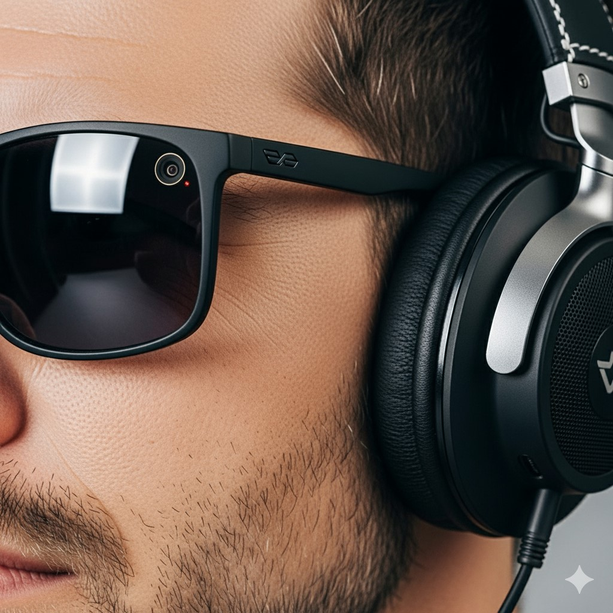

Blind and Visually Impaired
We seek those who see with their hearts. Those who want to create a world where everyone has a second sense — and vision that doesn’t rely on sight.
The "Second Sense" company opens new possibilities for the visually impaired through the "Second Sense: Vision" project. With innovative technology, we help people see the world anew — clearly, confidently, without barriers.
Support the Project"Second Sense: Vision" is a project by the "Second Sense" company, a technological initiative that opens the world to the visually impaired through artificial intelligence. We’ve developed our first prototype and are testing it to make life more independent and comfortable for those with visual impairments.
Develop a prototype powered by AI that works offline, ensuring accessibility in any environment.
We use image analysis, audio descriptions, and advanced AI algorithms to create a user-friendly and effective tool.
We’re building a world without barriers, where everyone can interact freely with their surroundings, regardless of visual limitations.
The "Second Sense" company believes that vision is not just about eyes but about feeling, creating, and being free. Through the "Second Sense: Vision" project, we combine cutting-edge technology with empathy to create a world where everyone has access to life’s beauty and opportunities. Our goal is to give millions of blind and visually impaired people a new digital sense.
"Second Sense: Vision" by the "Second Sense" company uses artificial intelligence to analyze images in real-time, transforming visual information into detailed audio descriptions. Our prototype already works online, with offline functionality planned for the future to ensure accessibility in remote areas. AI algorithms adapt to users’ individual needs, providing accurate and clear descriptions of environments — from city streets to natural landscapes.
Soon, the technology will work without internet, making it accessible everywhere.
AI learns to understand the specific needs of each user.
An intuitive interface that’s easy to use for people of all ages.
Want to experience how a second sight is born? Join our Telegram channel @secondsensevision — together, we’re taking the first steps toward a life-changing platform!
Join Telegram ChannelTest the prototype and share your feedback.
Explore the prototype of our innovative smart glasses with a built-in camera and earphones, enabling the visually impaired to “see” the world through audio descriptions.
We seek those who see with their hearts. Those who want to create a world where everyone has a second sense — and vision that doesn’t rely on sight.
We seek those who see with their hearts. Those who want to create a world where everyone has a second sense — and vision that doesn’t rely on sight.
We seek those who see with their hearts. Those who want to create a world where everyone has a second sense — and vision that doesn’t rely on sight.
When artificial intelligence becomes a sense, everything changes.
A traveler who lost their sight rediscovers freedom. Thanks to "Second Sense: Vision" by the "Second Sense" company, they navigate bustling city streets, cross noisy intersections, and climb mountain peaks. Their audio guide whispers: “Ahead lies an open valley, the sun touches the horizon…” — and this becomes their new reality.
"I travel again. Not with my eyes — with my soul."
Colors were once just a sensation in their fingers. Now, they’re an emotion amplified by words: “Here’s the horizon line, here’s a tree reaching for the sky.” The artist creates paintings guided not by eyes but by the AI voice of "Second Sense: Vision."
"My paintings are the music of color that I hear."
A teacher explains chemistry or geography not with eyes but with the mind. With "Second Sense: Vision" by the "Second Sense" company, they use visual cues to translate charts and maps into simple sounds, opening doors to science where none existed before.
"I teach not to see, but to feel science."
"Second Sense: Vision" by the "Second Sense" company is more than technology. It’s a new level of freedom, creativity, and connection with the world for those who see not with their eyes but with their hearts.
This is not just technology. It’s a new way to see. To feel. To live. We are Second Sense. And we open vision where there were none before.
We are technology with a soul. We create a new digital sense for those who see with their hearts. "Second Sense: Vision" is not just a tool. It’s freedom, dignity, and a new reality for millions.
By investing in "Second Sense: Vision," you become part of a technological revolution with a human face, brought to life by the "Second Sense" company.
"We’re not just building a product — we’re opening the world to those who have never seen it."
Help fund the development.
Collaborate to scale the project.
Join our team of innovators.
Write to us. We respond not just with words — we respond with action.